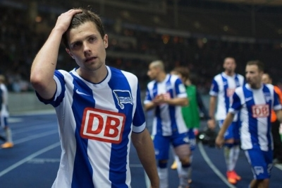

Дата основания – 25 июля 1892 года
Стадион – Олимпияштадион (г. Берлин), вместимость 74.500.
Официальный сайт клуба - www.herthabsc.de
Тренер: Пал Дардай
Прозвище : Die Alte Dame (Старая Дама)
Цвета : сине-белые

История ФК Герта:
История футбольного клуба Герта начинается 25 июля 1892 года, когда еще команда называлась БФК Герта 92. Клуб основал молодой юноша со своими друзьями, а название для команды он придумал благодаря пароходу, на котором когда-то плавал со своим отцом. У этого парохода была бело-синяя дымовая труба, и её окрас был позаимствованы друзьями как цвета клуба. Так же существует история, что название Герта происходит от слова Nerthus, которое в древнегерманской мифологии означает Богиню плодородия. Прозвищем команды еще с самого начала стало такое же прозвище, как и у футбольного клуба Ювентус – Старая синьора (Die Alte Dame). Первый успех пришёл в команду в 1906 году – «Герта» выиграла чемпионат Берлина. После Первой мировой войны команда испытывала финансовые трудности и, чтобы решить их, была вынуждена объединиться со спортивным клубом «Берлинер» в 1920 году и именно тогда команда получила приставку BSC к своему названию.
В период с 1926 по 1930 годы включительно клуб шесть раз становился финалистом чемпионата Германии, а в 1930 и 1931 годах ему всё же удалось завоевывать чемпионский титул. После этих двух успешных сезонов Герта ни разу не становилась чемпионом Германии.
С 1933 года после реорганизации все футбольной системы Германии футбольный клуб Герта стал играть в Гаулиге Берлина-Бранденбурга (одной из региональных лиг Гаулиги). В 1935, 1937 и 1944 годах команда становилась победителем данной лиги. После Второй мировой войны ФК Герта был расформирован, но не на долго. Практически сразу же команду возродили под названием SG Gesundbrunnen и клуб стал играть в Берлинской Оберлиге в группе «C». Но долго там клуб не продержался из-за уменьшения количества команд с 36 до 12. И после того Герта до 1949 года стала играть в любительской лиге Берлина. В 1949 году в истории футбольного клуба Герты произошли несколько хороших событий. Сначала было возвращено прежнее название Hertha BSC Berlin, а после клуб приняли в главную лигу Германии. После этого на протяжении многих лет команда была одной из лучших не только в Берлине, но и в Германии.
В 1963 году была образована Бундеслига и «Герта» приняла участие в её первом сезоне. Столичные футболисты показывали содержательный футбол в главной лиге страны, но уже по итогам сезона 1964/65 команда была понижена до Региональной лиги из-за коррупционного скандала. Берлинские болельщики очень хотели видеть местную команду в Бундеслиге, поэтому пока Герта скиталась в низшем дивизионе,в национальном чемпионате появилась новая команда - "Тасмания 1900", которая не добилась успеха в чемпионате, а ровно наоборот - опозорила столицу Германии в чудовищном стиле. В тридцати четырех матчах Бундеслиги команда одержала победу только в двух, четыре матча смогла свести к ничьим и в оставшихся 28 играх потерпела поражения. Разница мячей при этом составила -93 (забито - 15 мячей, пропущено - 108). После этого сезона ФК "Тасмания 1900" был расформирован из-за банкротства. Герта же вернулась в Бундеслигу в 1968 году.
В сезоне 1969/1970 команда завоевала бронзу в чемпионате. В чемпионате 1970/1971 гг. Герта повторяет это достижение - снова третье место.
В 1971 году «Герта» стала фигурантом очередного скандала. В этот раз разбирательства были связаны с договорными матчами, а сам клуб находился в тяжёлой финансовой ситуации. Чтобы погасить задолженности, которые составляли 6 миллионов немецких марок, «Герте» пришлось продать домашнюю арену. В этом же году клуб участвует в первом розыгрыше Кубка Уефа, пришедшего на смену Кубку Ярмарок. Берлинский клуб дошел до второго раунда, где проиграл итальянскому Милану со счетом 4:5.
В 1975 году команда с 44 очками финишировала на втором месте в Бундеслиге, уступив чемпионство менхенгладбахской «Боруссии».
В 1975/1976 гг. Герта снова играла в Кубке Уефа и опять вылетела во втором раунде, на этот раз уступив амстердамскому Аяксу (2:4).
В сезоне 1977/1978 Герта завоевывает бронзу в национальном чемпионате, всего лишь на одно очко опередив Штутгарт и Фортуну.
В сезоне 1978/1979 команда вышла в полуфинал Кубка УЕФА, по пути взяв верх над болгарским клубом Ботев, тбилисским Динамо, датским Эсбьергом и пражской Дуклой, но уступила сербской Црвене Звезде и покинула турнир.
В сезоне 1982/1983 Герта вылетает из национального чемпионата, заняв последнее место. После этого дела у команды идут не лучшим образом : клуб много лет проводит во второй Бундеслиги, лишь временами, зарабатывая путевку в сильнейшую лигу Германии, но практически сразу же ее покидая.
Наконец, злоключения берлинцев заканчиваются в сезоне 1997/1998. Команда сумела занять 11 место в первой Бундеслиги, таким образом, сохранив прописку на следующий сезон, в котором команда показывает сумасшедшее рвение и завоевывает путевку в Лигу Чемпионов и четвертую бронзу в своей истории, отстав лишь на один балл от серебряных медалей. С этого года у клуба начинаются золотые времена в современной эпохе.
В сезоне 1999/2000 берлинцы занимают лишь шестое место, но Герта квалифицируется в Кубок Уефа, а в Лиге Чемпионов без проблем проходит третий квалификационный раунд и в первом групповом этапе ,span class="bold">занимает второе место в группе H, показав более чем содержательный футбол в группе с Челси, Галатасараем и Миланом, но во Втором групповом этапе у берлинцев не хватило опыта и сил. Как итог - последнее место в группе A.
В 2000/2001 Герта продолжает показывать стабильность - пятое место в чемпионате и снова путевка в Кубок Уефа. В розыгрыше же этого сезона команда вылетела в третьем раунде после противостояния с миланским Интернационале.
В следующем сезоне столичные футболисты поднимают планку - четвертое место и очередное участие в Кубке Уефа. К сожалению, в Кубке Уефа 2001/2002 Герта вылетела на том же этапе, что и в прошлом году : на этот раз сильнее оказался ФК Серветт.
В сезоне 2002/2003 Герта продолжает радовать фанатов - пятое место и очередная квалификация в кубок уефа. Так же Герта стремится к победе в Кубке Уефа, но в 1\8 финале в драматическом противостояние с Боавиштой вылетает из-за правила выездного гола (3:2 дома и 0:1 в гостях).
Единственным черным пятном за это время для команды становится сезон 2003/2004 : в национальном чемпионате Герта занимает лишь 12 место, а Кубок УЕФА оказался для берлинцев настоящим позором : клуб вылетел в первом раунде, проиграв польскому Гроцлину.
В 2004/2005 Герта вернулась к борьбе за высокие места - 4 место в Бундеслиге и путевка во второй по значимости турнир Европы.
2005/2006 - шестое место и кубок Интертото. Сезон в Европе 2005/2006 получается достаточно успешным для Герты. Клуб без проблем проходит в групповой этап, в котором занимает третье место, не потерпев ни одного поражения, но в 1\16 финала неожиданно уступает Рапиду.
В следующем сезоне команда занимает только 10 место в Бундеслиге, а в Кубке Уефа столичные футболисты продолжили неприятно удивлять своих фанатов, довольно быстро вылетев на предварительных раундах.
2007/2008 - 10 место, но Герта квалифицировался в кубок УЕФА как победитель соревнования Fair Play.
В последнем в истории розыгрыше Кубка Уефа в сезоне 2008/2009 Герта без проблем проходит все отборочные раунды, но в группе оказывается одной из слабейших команд, заняв предпоследнее место, при этом забив лишь один мяч, а пропустив 6. В национальном чемпионате берлинцы занимают четвертое место и зарабатывают очередную путевку в Европу.
После этого у берлинцев начинаются не самые приятные времена : в следующем сезоне клуб вылетает из Бундеслиги, а в новообразованной Лиге Европы доходит до 1\16 и разгромно уступает Бенфике. Герта становится командой-лифтом, время от времени проваливаясь во вторую Бундеслигу, поднимаясь в первую и снова борясь за выживание.
Сезон 2015-2016 Герта начала под руководством своего бывшего футболиста Пала Дардаи на мажорной ноте : в первом туре Бундеслиги был обыгран Аугсбург, а в Кубке Германии берлинцы прошли Арминию, таким образом попав в 1\16 финала.